如何利用github搭建一个个人网站
发表于2016/5/18 15:28:58 4757人阅读
分类： 网站
一、Github Pages的使用
1、首先你得有一个Github账号，没有的话去github.com注册一个；
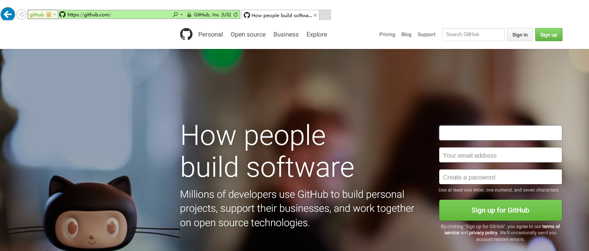
点击Sign up for Github进入注册页面
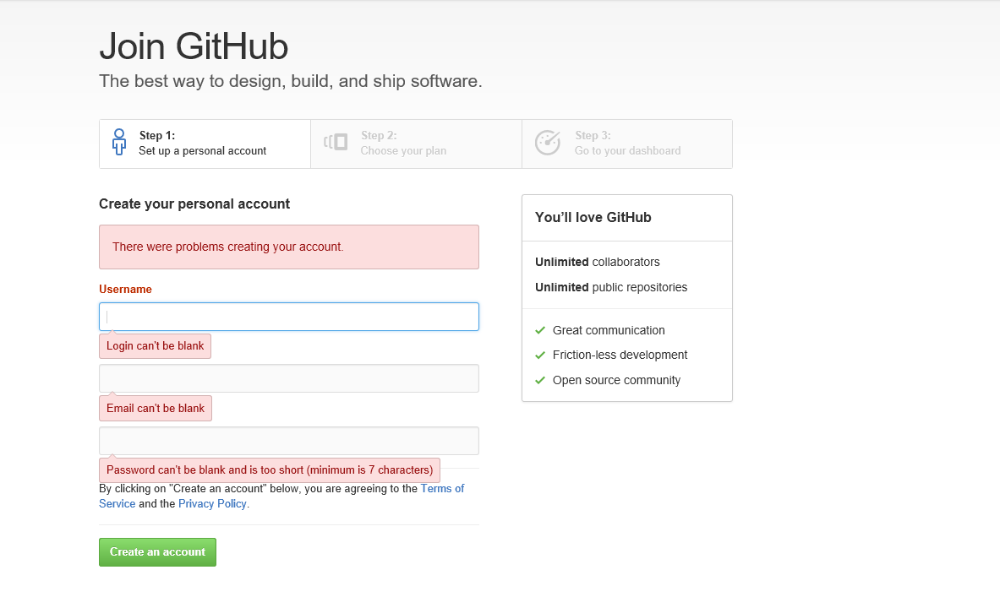
2、有了账号以后登录到Github新建仓库
（1）点击New repository新建仓库
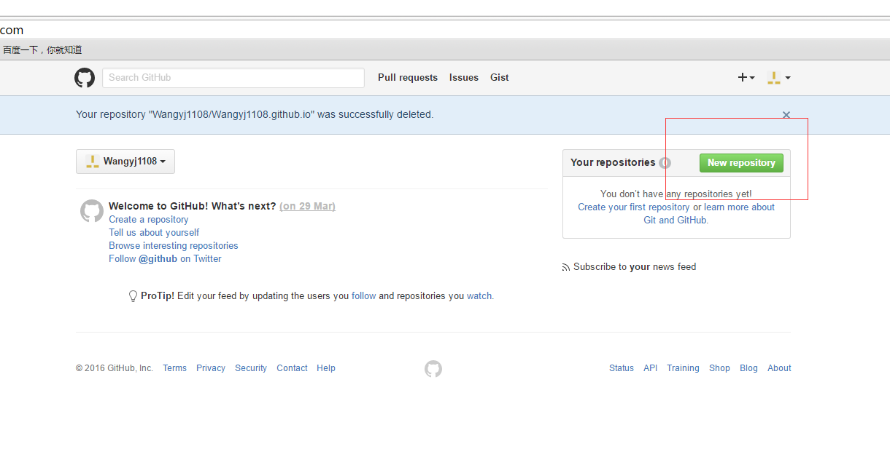
（2）这里只需要注意一点Repository name要用Owner加上 .github.io然后点击create repository
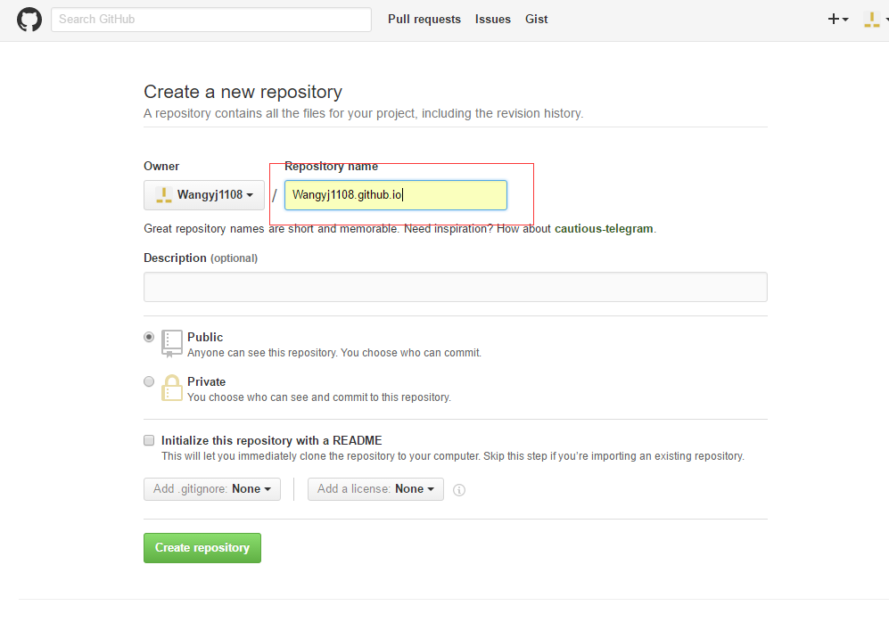
（3）到这里仓库就新建好了
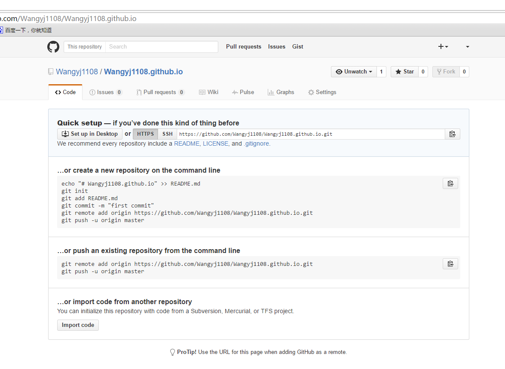
二、把源码上传到github仓库
1、clone到本地
（1）选择一个目录输入下面的指令
git clone https://github.com/Wangyj1108/Wangyj1108.github.io.git
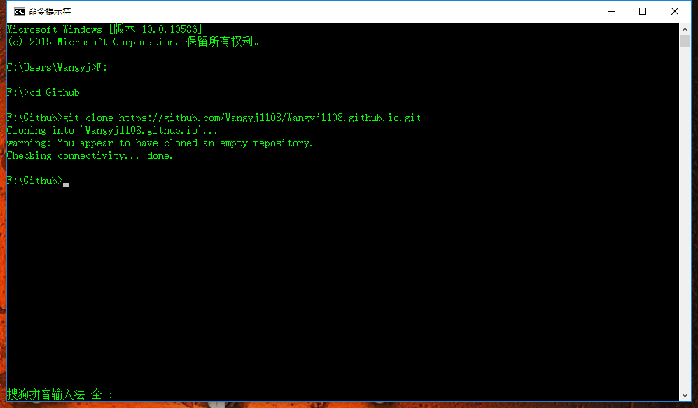
注意：如果你的电脑不支持git命令你可以安装git，去git官网下载一个git到本地安装
安装完成以后配置环境变量然后打开命令行输入git命令查看是否安装成功
2、clone到本地以后会在你选择的目录下生成一个Wangyj1108.github.io文件夹
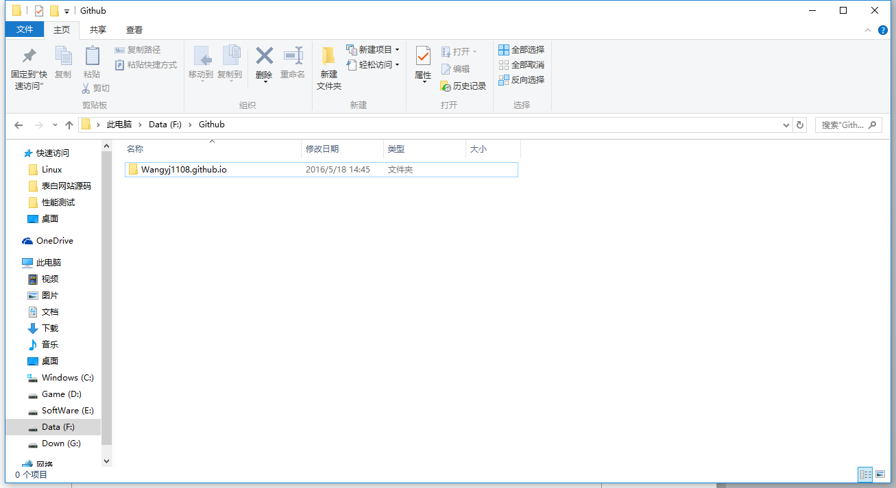
进入到文件下，把你的代码放进去
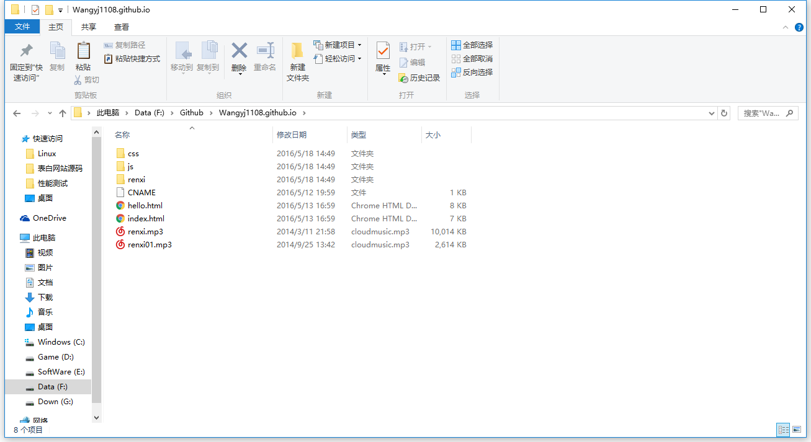
3、打开命令行进入到Wangyj1108.github.io目录下依次执行下面的命令
git add .
git commit -m “上传网站源码到github”
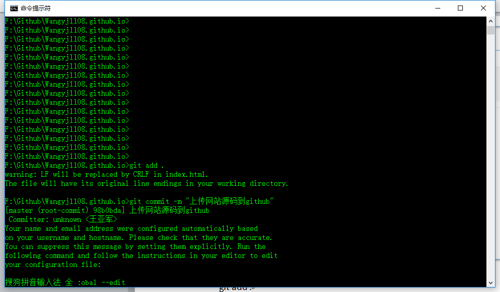
git push 并输入账号密码（github账号密码）
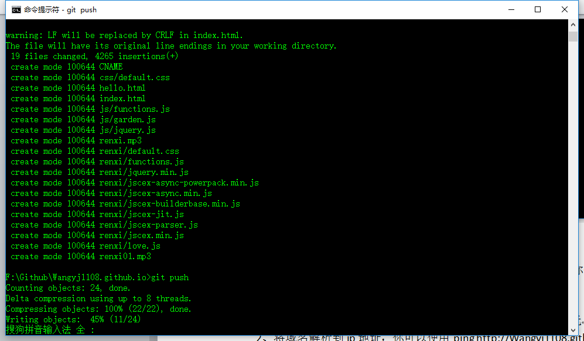
4、等待代码上传完成后你就可以访问http://Wangyj1108.github.io了
三、买域名解析到github
1、去域名服务商买一个合适的域名，便宜的就几块钱；
2、将域名解析到ip地址，你可以使用 ping http://Wangyj1108.github.io去查看IP
进入到万网的控制台选择云解析
添加下面2条记录就可以了
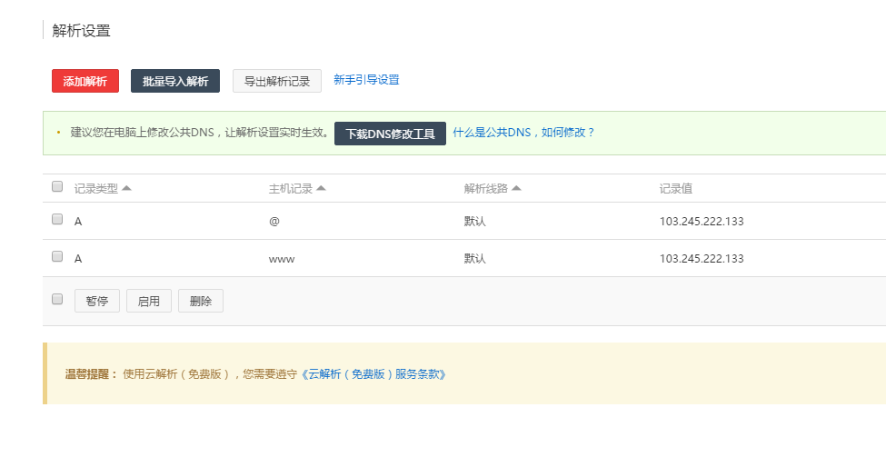
到你这里你去访问你的域名会报404
还差一个CNAME文件，这个文件需要提交到我们刚才创建的仓库，内容为我们的域名
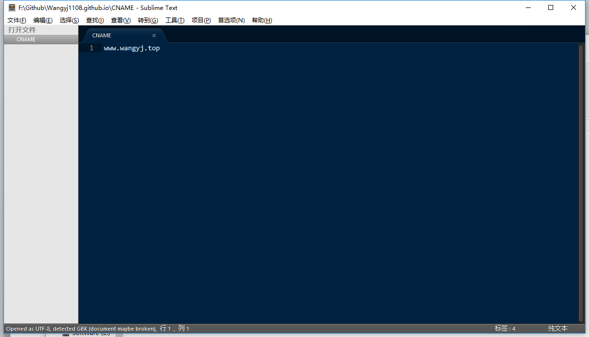
提交完就可以访问我们的域名了
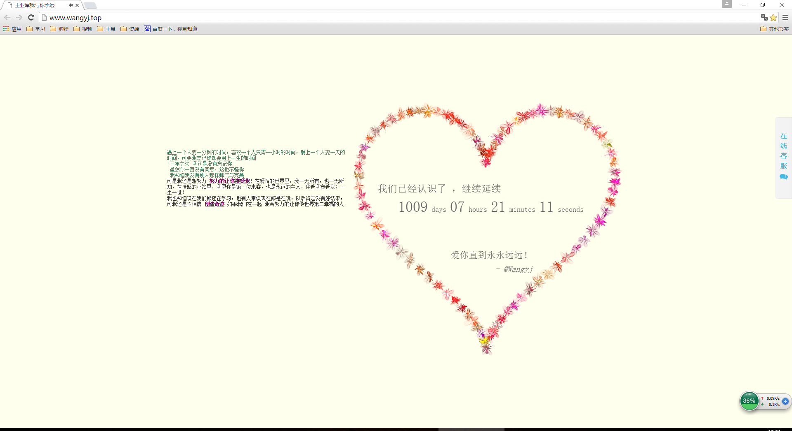
我是上传的是我从网上下载的一个表白网站的源码，可以直接下载，上传试试。